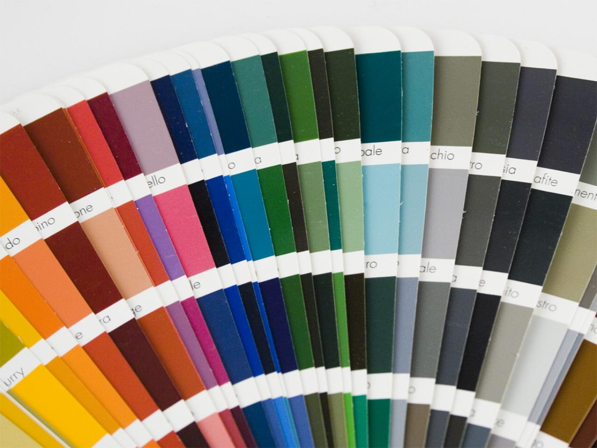
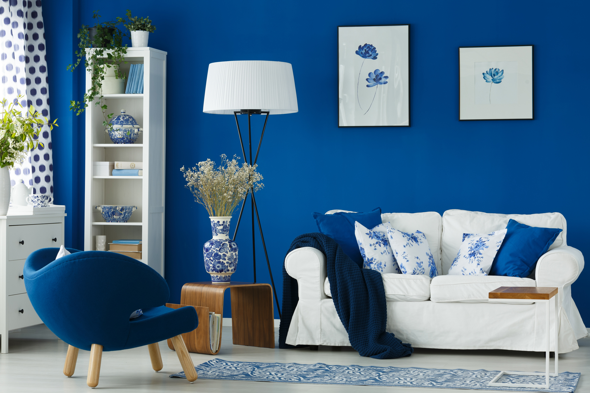

Сколько цветов должно быть в интерьере?
Время прочтения: 5 минутЧтобы долго вас не томить, ответим сразу - три, а если быть точнее, то правильно использовать не больше 2-3 спектральных(!) цветов. Думаете мало? Тогда читайте дальше! Спектральный цвет - это один из 12 цветов на цветовом круге. Лучше всего выбирать цвета на цветовом круге с помощью треугольников, которые изображены на круге. Поворачиваете вершину на основной цвет и получаете два дополнительных к нему цвета, которые находятся на двух других вершинах. На этом этапе, выбор у нас достаточно обширный, но цвета вам покажутся слишком яркими и насыщенными, не так ли?
Что же делать дальше?
А дальше разбиваем выбранные 2 или 3 цвета на оттенки. На практике, смешиваем цвет с белым и с чёрным цветом, в разных пропорциях. В итоге из одного спектрального цвета можно вытащить до 100 оттенков легко. Если в интерьере допустимо лишь 3 цвета, то оттенков может быть миллион, тут никаких правил нет. В этом и состоит весь секрет! Именно бесчисленные комбинации оттенков и расширяют творческие границы до невообразимых пределов. Игра между оттенками спектральных цветов, правильное их сочетание, применение контрастов и создаёт для нашего глаза, те самые цветовые схемы в интерьерах, которые вызывают у нас наслаждение. Важно помнить, что это не цвет - это всегда палитра оттенков! Самое сложно - это видеть в оттенках один из 12 спектральных цветов. Именно поэтому чувство цвета и стоит развивать. Вопрос также актуален для презентаций, подач, архитектуры, одежды, кулинарных блюд, фотографии и т.д, потому что все эти правила применимы и здесь. Как вы уже догадались любая цветовая палитра любой страны кроется в полотнах выдающихся живописцев! Вот и всё, на этом можно закончить и разойтись, но нет идём дальше! Поговорим на примере Голландии. Выбираете сначала своих любимых авторов, затем собирает их картины и анализируете цвет (за одно формы, фактуры и текстуры, забегая вперёд). Лучше брать живопись разных эпох, потому что сразу и исторический анализ сам собой появиться. Чувствуете, что этот способ намного легче идёт? А дальше начинаете вытаскивать сначала основные цвета, а затем оттенки. Можно делать это руками, сидеть и мешать акварель с белой темперой или белилами, можно в Photoshop закинуть или же с телефона в Pantonе. Посидели так часик, другой и поняли, что Голландия характерна большим количеством чёрного цвета, особенно портреты (мы их обожаем). Помимо чёрного есть характерная черта у всех цветов, они все приглушённы белилами и сероватой дымкой. Есть и яркие пятна, но это только акценты. Живопись при этом динамичная, но это далеко не Масленица С этого момента на выставке смотрите на тон и подтон красок, замечайте интересные сочетания и контрасты! Помните, если ваш взгляд остановился на картине, значит автор заложил туда много интересных цветовых схем, постарайтесь разгадать его загадку. К тому же один их инструментов - это насмотренность, развеивайте ее постоянно!
Чтобы долго вас не томить, ответим сразу - три, а если быть точнее, то правильно использовать не больше 2-3 спектральных(!) цветов. Думаете мало? Тогда читайте дальше! Спектральный цвет - это один из 12 цветов на цветовом круге. Лучше всего выбирать цвета на цветовом круге с помощью треугольников, которые изображены на круге. Поворачиваете вершину на основной цвет и получаете два дополнительных к нему цвета, которые находятся на двух других вершинах. На этом этапе, выбор у нас достаточно обширный, но цвета вам покажутся слишком яркими и насыщенными, не так ли? С этого момента на выставке смотрите на тон и подтон красок, замечайте интересные сочетания и контрасты! Помните, если ваш взгляд остановился на картине, значит автор заложил туда много интересных цветовых схем, постарайтесь разгадать его загадку. К тому же один их инструментов - это насмотренность, развеивайте ее постоянно!